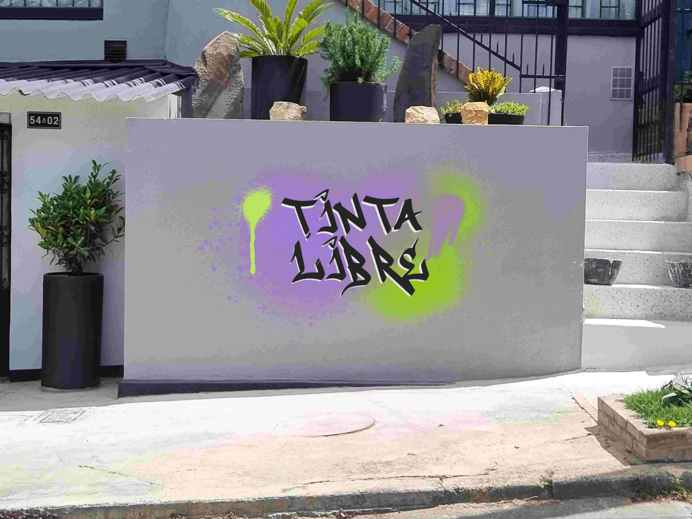

En el mural se aprecia un graffiti vibrante creado por la protagonista Luna para el video de presentación de Tinta Libre. Sobre una superficie gris lisa, destacan manchas de aerosol en tonos verde neón y lila, aplicadas con trazos espontáneos que crean un halo difuminado alrededor del diseño. Al centro, se lee la frase “TINTA LIBRE” en un estilo tipográfico urbano, anguloso y dinámico, con líneas negras gruesas que evocan rebeldía y autenticidad. Las gotas de pintura que escurren —especialmente una muy visible en verde— refuerzan el carácter improvisado y callejero de la obra. El resultado transmite la esencia creativa y libre de Luna: una expresión artística que mezcla energía, identidad y un mensaje de autoafirmación en el espacio público.
